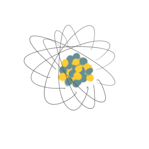
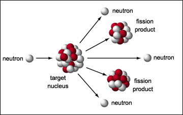

One of the major considerations when discussing nuclear energy is how to handle the waste. There are three levels of radioactivity in nuclear waste, with the most radioactive being fuel elements, the intermediate level being radionuclides, and low-level waste being clothes and other items exposed. Various countries have had different solutionsfor dealing with this waste, which poses a problem because it significantly radioactive for many years.
The half-life of the high-level byproducts of nuclear fission of Uranium are lighter elements, primarily Cesium and Strontium. Plutonium’s half-life is 24,000 years, which refers to the amount of time it takes for the radioactive isotopes to decay to half their original weight. It is very important that this radioactive waste does not leak or contaminate surrounding areas, where it could potentially end up in groundwater or other places. This, of course, would have serious health risks and therefore must be handled very cautiously to ensure public safety.
Waste produced in the United States, for example, is stored in reinforced concrete “dry cells” in a geologic repository, as there is no current method for completely destroying high-level waste as of yet. There this waste remains, unaffected, however concerns are often raised of the event of an Earthquake or other geological event that could potentially compromise the integrity of the stored waste.